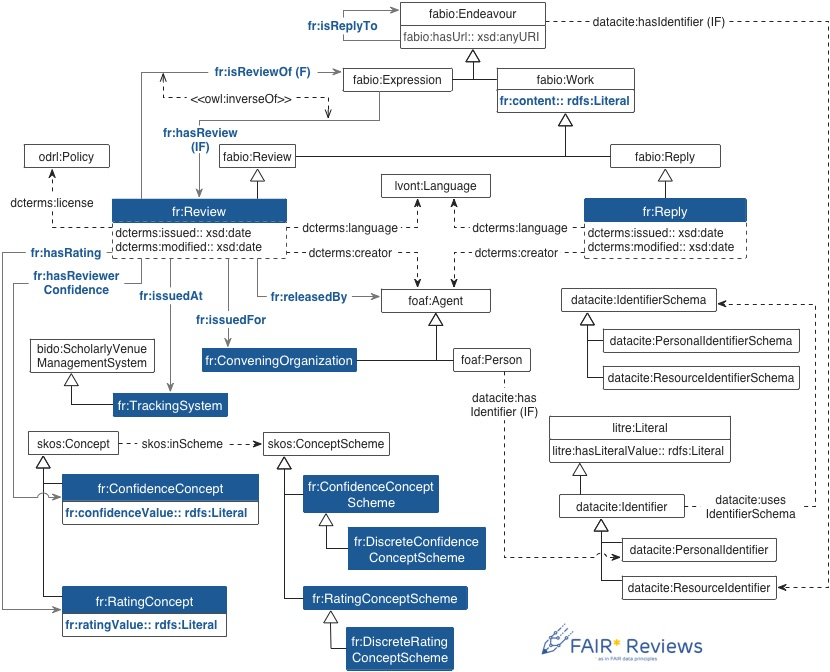

PreReview and FAIR* Reviews
isantana@fi.upm.es 0000-0001-8296-8629 @idafensp
mpoveda@fi.upm.es 0000-0003-3587-0367 @MariaPovedaV
Ontology Engineering Group
Universidad Politécnica de Madrid
Who we are
- Ontology Engineering Group
- Semantic Web
- Linked Data
- Ontologies :)
Who we are
- Idafen Santana, PhD
- Reproduciblity: main topic of PhD thesis
- Open Science: open scholarly communication and experimental data
- María Poveda-Villalón, PhD
- Ontology development: methodologies, best practices, tooling...
- Ontology evaluation
Our approach
- Expose the knowledge of a scientific review
- An study conducted by an expert in the topic
- Open Reviews as Linked Data
- General-purpose model
- Allows specialization
- Structure the review and its contents
Why Linked Data?
- Metadata enrichment
- Structured data
- Well-known models (i.e. vocabularies/ontologies)
- Linked (open) data on the web
- Data instead of documents
- Linked to other datasets (e.g. OpenCitations, SpringerNature, etc.)
The FAIR* Reviews Ontology
PreReview & F*R
- Use the F*R ontology for enriching reviews
- F*R platform for hosting reviews as LD
- Link reviews to other datasets in your domain
PreReview and FAIR* Reviews
isantana@fi.upm.es 0000-0001-8296-8629 @idafensp
mpoveda@fi.upm.es 0000-0003-3587-0367 @MariaPovedaV
Ontology Engineering Group
Universidad Politécnica de Madrid